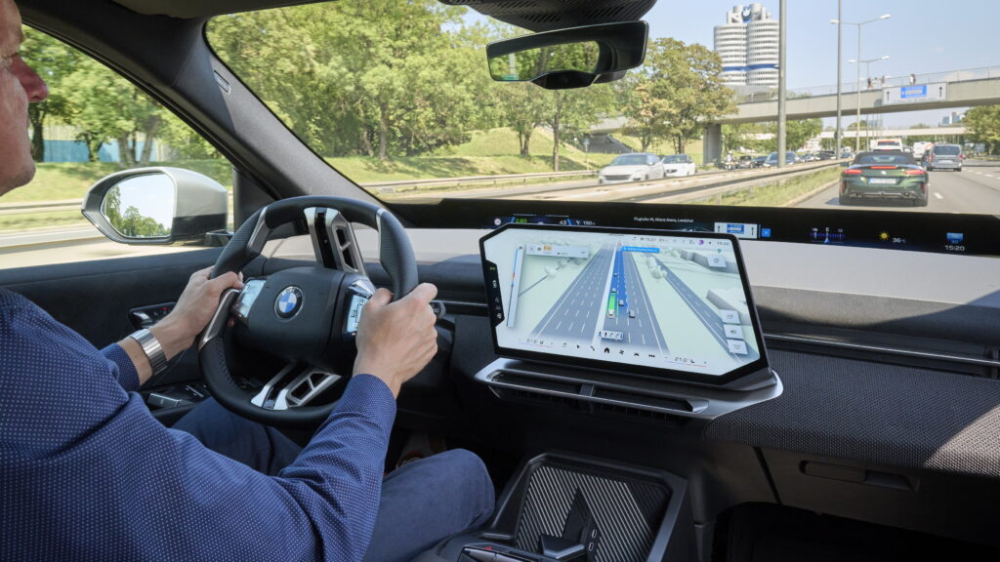

for DC Advanced UX Team.Vivi · Yohan · Libby · Lim Jisu · Katey · Anna
Latest News

Interaction
BMW Maps: route and sensor view in one 3D map
From October 2026, BMW Operating System X cars with Highway Assistant or Highway & City Assistant get BMW Maps with driver assistance: route guidance, the car's perception of its surroundings and the active assistance functions drawn in one 3D view on the centre display, with the car placed in its lane and at the correct road level. BMW built it in-house on Mapbox data, fusing map, sensors and AI; navigation-guided semi-automated urban driving follows in Germany in 2027. Tesla-style sensor visualisation arrives in a German OEM's map.
2026年10月起，搭载BMW Operating System X并配备高速辅助或高速及城市辅助的宝马车型将获得“带驾驶辅助的BMW Maps”：导航路线、车辆对周边环境的感知与正在工作的辅助功能，在中控屏上合成同一幅3D画面，车辆精确置于所在车道和道路层级。宝马基于Mapbox数据自研，融合地图、传感器与AI；2027年起在德国推出按导航路线的城市半自动驾驶。特斯拉式的感知可视化进入德系车的地图。
2026년 10월부터 BMW 운영체제 X에 하이웨이 어시스턴트나 하이웨이·시티 어시스턴트를 갖춘 BMW 차량에 '드라이버 어시스턴스가 통합된 BMW 맵스'가 배포된다. 경로 안내, 차량이 인식한 주변 환경, 작동 중인 보조 기능이 센터 디스플레이의 3D 화면 하나에 그려지고 차량은 실제 차선과 도로 높이에 정확히 놓인다. BMW가 Mapbox 데이터로 자체 개발해 지도, 센서, AI를 결합했으며 2027년 독일에서 내비게이션 연동 도심 반자율주행이 뒤따른다. 테슬라식 인지 시각화가 독일 브랜드의 지도에 들어왔다.
Renault revived the 8 Gordini as a two-seat electric coupe shown at Renault Carwalk on September 24, 4.12 m long, ahead of the Paris Motor Show (October 12 to 18). The cabin refuses screens: six thick-bezelled round gauges sit on a brushed aluminium strip running pillar to pillar, a second aluminium panel between the seats carries toggle switches, and a red button in the centre of the dash starts a lap stopwatch. Blue corduroy buckets, Alcantara doors, a six-lamp V nose, 19 and 20-inch wheels and a 270 PS rear motor complete the one-off, bound for the Renault Collections museum at Flins.
르노가 8 고르디니를 2인승 전기 쿠페로 되살렸다. 전장은 4.12m다. 9월 24일 르노 카워크에서 공개됐고 10월 12~18일 파리 모터쇼에 전시된다. 실내에는 화면이 하나도 없다. 두꺼운 베젤의 원형 계기 여섯 개가 필러에서 필러까지 이어지는 브러시드 알루미늄 띠 위에 놓이고, 시트 사이의 알루미늄 패널에는 토글 스위치가 달린다. 대시보드 중앙의 빨간 버튼은 랩타임 스톱워치를 켠다. 파란 코듀로이 버킷 시트, 알칸타라 도어, 헤드램프 여섯 개의 V자 앞모습, 19·20인치 휠, 270PS 후륜 모터를 갖춘 단 한 대의 콘셉트로 플랭의 르노 컬렉션 박물관에 들어간다.
On September 24 Adobe put Photoshop, Lightroom, Express and Firefly inside Google Gemini for all plans worldwide: relight and recolour a photo, build on-brand social posts or customise templates from a chat prompt. The same day its Claude plugin grew to more than 80 tools across Acrobat, Express, Photoshop, Illustrator, Premiere, Lightroom, InDesign and Stock, adding Acrobat page tools and redaction, an interactive PDF editor, a Document Review skill and a layer-based Express editor that changes text, colours and fonts without regenerating the design. The suite is becoming a toolset other assistants call.
어도비가 9월 24일 포토샵, 라이트룸, 익스프레스, 파이어플라이를 구글 제미나이 안에 넣었다. 전 세계 모든 요금제에서 프롬프트 한 줄로 사진의 조명과 색을 손보고 브랜드에 맞는 소셜 콘텐츠를 만들거나 템플릿을 고칠 수 있다. 같은 날 클로드용 어도비 플러그인은 아크로뱃, 익스프레스, 포토샵, 일러스트레이터, 프리미어, 라이트룸, 인디자인, 스톡을 아우르는 80개 이상의 도구로 늘었다. 아크로뱃 페이지 정리와 문서 가리기, 대화형 PDF 편집기, 문서 검토 스킬, 전체를 다시 생성하지 않고 글자·색·서체만 바꾸는 레이어 기반 익스프레스 편집기가 더해졌다. 크리에이티브 제품군이 다른 비서들이 호출하는 도구 상자로 바뀌고 있다.
Tomorrow Bureau's launch film for the Aston Martin Valen, the 150-unit, 838 hp V12 supercar, uses the engine as the edit: every ignition, gear shift and surge in revs is mapped to a camera move, a cut or a change of pace, so the recordings dictate the rhythm. The all-CG car sits in a bare anechoic space, monumental wide shots against forensic close-ups of the herringbone carbon, the slimline lamps and the full-width rear light bar. Made with Design Bridge and Partners; sound by Solter Studio and Zelig Sound. A reference for animating a product to its own audio.
Tomorrow Bureau为阿斯顿·马丁Valen（限量150台、838马力V12超跑）制作的发布片把发动机当成剪辑师：每一次点火、换挡和转速攀升都对应一个镜头运动、一次剪切或节奏变化，让录音决定影片结构。全CG的车身置于空无一物的消声空间里，巨幅广角与对人字纹碳纤维、细长灯组和贯穿式尾灯的特写交替出现。与Design Bridge and Partners合作，声音由Solter Studio和Zelig Sound完成。想让产品动画对准自身声音的人，值得拆解。
투모로 뷰로가 만든 애스턴마틴 발렌 론칭 필름은 엔진을 편집자로 삼았다. 150대 한정, 838마력 V12 슈퍼카의 점화, 변속, 회전수 상승이 하나하나 카메라 이동과 컷, 속도 변화에 대응해 녹음이 영상의 리듬을 정한다. 풀 CG로 만든 차는 아무것도 없는 무향실에 놓이고, 거대한 와이드 숏과 헤링본 카본, 얇은 램프, 가로로 이어진 리어 라이트 바를 파고드는 클로즈업이 교차한다. 디자인 브리지 앤 파트너스와 협업했고 사운드는 솔터 스튜디오와 젤리그 사운드가 맡았다. 제품을 자기 소리에 맞춰 움직이려는 이들에게 좋은 참고 자료다.
At Connect on September 24 Meta showed VR Glasses: a magnesium-alloy frame of about 100 g (five times lighter than Quest 3) carrying only the displays, Scrabble-tile-sized pancake lenses, cameras and audio, while compute, battery and storage move to a pocket puck on an optical tether. Dual 2,412 × 2,288 micro-OLED panels at up to 120 Hz give 37 pixels per degree and a 70° horizontal view with an open periphery, Dolby Vision and full-colour passthrough. Eyes and hands are the controllers; virtual panels pin over a real desk. $1,299.99, spring 2027. The first headset shaped like eyewear, not a visor.
메타가 9월 24일 커넥트에서 VR 글래스를 공개했다. 약 100g의 마그네슘 합금 프레임(퀘스트 3의 5분의 1 무게)에는 디스플레이, 스크래블 타일 크기의 팬케이크 렌즈, 카메라, 오디오만 들어가고 연산·배터리·저장 장치는 광 케이블로 연결되는 주머니 크기의 퍽으로 옮겼다. 양안 2412×2288 마이크로 OLED가 최대 120Hz로 구동돼 각도당 37픽셀, 수평 시야 70°를 내며 주변 시야는 열려 있다. 돌비 비전과 풀컬러 패스스루를 지원하고 눈과 손이 컨트롤러다. 실제 책상 위에 가상 패널을 고정할 수 있다. 1,299.99달러, 2027년 봄 출시. 바이저가 아니라 안경 모양을 한 첫 헤드셋이다.
Rain Noe's Core77 essay argues that the Volvo EX30's cabin dresses a bill-of-materials cut as minimalism: no cluster behind the wheel (speed is read off the centre screen), no head-up display option, headlights, wipers, mirrors and even the glovebox moved into the touchscreen, capacitive pads on the wheel and a single soundbar in place of door speakers. Volvo's own line, that one screen 'creates a feeling of space around the driver, as well as saving on materials', is the giveaway. A sharp counterpoint to the industry's screen-first cabins, from the brand that built its name on safety.
레인 노가 코어77에 쓴 글은 볼보 EX30의 실내가 원가 절감을 미니멀리즘으로 포장했다고 주장한다. 스티어링 휠 뒤에 계기판이 없어 속도를 센터 스크린에서 읽어야 하고, 헤드업 디스플레이 옵션도 없다. 헤드라이트, 와이퍼, 거울, 심지어 글러브박스까지 터치스크린으로 들어갔고, 휠에는 정전식 패드, 도어 스피커 대신 사운드바 하나가 달렸다. '화면 하나로 운전자 주변에 여유를 만들고 재료도 아낀다'는 볼보의 말이 증거다. 안전으로 이름을 쌓은 브랜드를 향한, 화면 우선 실내에 대한 날카로운 반론이다.
Triumph TXP-20 and TXP-24: kids' e-motos go trials
Triumph has added two larger models to its TXP electric balance-and-dirt range for young riders: the TXP-20 for ages 7 to 11 (1,600 W, 24 mph, 43 kg, 125 mm air fork and 115 mm monoshock) and the TXP-24 for 11 and up (2,000 W, 27 mph, 48 kg, fully air-adjustable 160/154 mm suspension). Both use FOC brushless motors, tool-free IPX7 batteries and a 2-in-1 layout: unbolt the seat and mudguard and the seated Xplore bike becomes a standing Trials bike. $3,495 and $3,995, on order at dealers now for delivery before Christmas. A clean, adult-looking mini-moto language.
트라이엄프가 어린이용 전동 오프로드 시리즈 TXP에 큰 모델 둘을 더했다. 7~11세용 TXP-20은 1,600W, 최고 시속 24마일, 43kg에 125mm 에어 포크와 115mm 모노쇽을 갖췄고, 11세 이상용 TXP-24는 2,000W, 27마일, 48kg에 앞 160mm·뒤 154mm 완전 에어 조절식 서스펜션을 쓴다. 둘 다 FOC 브러시리스 모터와 공구 없이 빼는 IPX7 배터리를 쓰며, 시트와 머드가드를 떼면 앉아 타는 익스플로어에서 서서 타는 트라이얼로 바뀌는 2-in-1 구조다. 3,495달러와 3,995달러로 딜러에서 주문을 받고 있으며 크리스마스 전에 인도된다. 어른 바이크처럼 정리된 미니 모토 디자인이다.
Swiss painter Renée Levi's 'September' covers the brutalist facade of London's Hayward Gallery from September 23 to November 15: fluorescent green, pink, blue and orange strokes on industrial mesh (the material normally used for building-wrap advertising), hung as two panels above and below the gallery's protruding window so the 'eye' becomes part of the composition. The marks stay at the scale of the painter's arm, and the mesh reads differently with distance, angle and daylight. Co-commissioned by the Hayward and Audemars Piguet Contemporary, its first painting commission since 2012.
스위스 화가 르네 레비의 '셉템버'가 9월 23일부터 11월 15일까지 런던 헤이워드 갤러리의 브루탈리즘 파사드를 덮는다. 형광 초록, 분홍, 파랑, 주황의 붓질을 건물 외벽 광고에 쓰이는 산업용 메시 위에 그려, 갤러리의 튀어나온 창 위아래 두 장으로 걸었다. 그래서 건물의 '눈'이 구도의 일부가 된다. 붓자국은 화가의 팔이 닿는 크기를 유지하고, 메시는 거리와 각도, 햇빛에 따라 다르게 읽힌다. 헤이워드와 오데마 피게 컨템포러리가 공동 의뢰했으며 후자가 2012년 이후 처음 의뢰한 회화 작업이다.
Volkswagen Anhui opened pre-sales of the ID. Unyx 09, a 5,081 mm electric fastback on a 3,030 mm wheelbase, at 199,900 yuan (about $29,400) ahead of a late-October launch. The cockpit pairs an 85-inch AR head-up display with a dedicated instrument cluster and a large floating centre touchscreen, with an AI assistant, sport seats with integrated headrests, wireless charging and hidden cupholders. Driving runs on a 750 TOPS Turing chip with a VLA model and 26 sensors for highway and urban NOA and AI parking; 91.96 kWh LFP, 5C charging, 755 km CLTC. VW keeps a cluster where its Chinese rivals drop it.
폭스바겐 안후이가 ID. 유닉스 09의 사전 판매를 199,900위안(약 29,400달러)에 시작했다. 전장 5,081mm, 휠베이스 3,030mm의 전기 패스트백으로 10월 말 출시된다. 실내에는 85인치 AR 헤드업 디스플레이와 별도의 계기판, 큼직한 플로팅 센터 터치스크린이 함께 놓이고 AI 어시스턴트, 일체형 헤드레스트 스포츠 시트, 무선 충전, 숨은 컵홀더가 더해진다. 주행 보조는 750 TOPS 튜링 칩과 VLA 모델, 센서 26개로 고속·도심 NOA와 AI 주차를 지원한다. 91.96kWh LFP 배터리, 5C 충전, CLTC 755km. 중국 경쟁사들이 계기판을 없애는 사이 폭스바겐은 남겼다.
At Tokyo Game Show (September 17 to 20) Samsung and NC built an elevator-shaped booth entrance around an 85-inch Spatial Signage panel showing near life-size characters from the RPG Astrae Oratio in glasses-free 3D. Samsung's 3D Plate layer creates the depth, and some visitors assumed props were mounted behind the glass before realising it was a single 52 mm-thick, 49 kg panel on a VESA mount; a 32-inch version is 49.4 mm and 8.5 kg. Content changes are a file swap, so the same screen can run a retail window or a queue without a diorama. Worth a look for anyone thinking about depth in a flat display.
도쿄 게임쇼(9월 17~20일)에서 삼성과 NC는 부스 입구를 엘리베이터 모양으로 만들고 그 안에 85인치 스페이셜 사이니지를 세워 RPG '아스트레 오라티오'의 캐릭터를 거의 실물 크기의 무안경 3D로 보여줬다. 깊이감은 삼성의 3D 플레이트 층이 만든다. 일부 관람객은 유리 뒤에 소품이 있다고 여겼다가 두께 52mm, 무게 49kg의 VESA 마운트 패널 한 장임을 알아챘다. 32인치 모델은 49.4mm, 8.5kg이다. 콘텐츠 교체는 파일만 바꾸면 되므로 같은 화면이 디오라마 없이 매장 쇼윈도나 대기열에도 쓰인다. 평면 디스플레이에서 깊이를 고민하는 이들이 볼 만하다.
Meta's new Ray-Ban Meta Audio Glasses drop the camera entirely: 43 g frames in Clubmaster and Burbank styles with thinner temples, adjustable nose pads and prescription support, open-ear directional speakers and Meta AI on a wake word for calls, messages, live translation and web answers. Without a camera the battery lasts 12 hours, and Meta stresses the glasses only listen for the wake word and do not record. Ships October 13 from $349, part of the 100-plus AI glasses styles Meta says it will offer by year-end. A voice-only wearable is a cleaner brief than a face camera, and a better analogue for in-car voice.
Meta新款Ray-Ban Meta Audio眼镜彻底去掉了摄像头：43克镜架，Clubmaster和Burbank两种款式，镜腿更细、鼻托可调、支持配镜，开放式定向扬声器，唤醒词启动的Meta AI可打电话、发消息、实时翻译和联网问答。没有摄像头，续航达12小时，Meta强调眼镜只监听唤醒词、不录制。10月13日发售，349美元起，属于Meta称年底前将推出的100多款AI眼镜之一。纯语音可穿戴设备比面部摄像头更干净，也更接近车内语音的场景。
메타의 새 레이밴 메타 오디오 글래스는 카메라를 아예 뺐다. 클럽마스터와 버뱅크 두 스타일의 43g 프레임에 더 얇은 다리, 조절식 코받침, 도수 렌즈 지원, 오픈이어 지향성 스피커를 갖췄고 호출어로 깨우는 메타 AI가 통화, 메시지, 실시간 번역, 웹 검색을 맡는다. 카메라가 없어 배터리는 12시간 가며, 메타는 안경이 호출어만 듣고 녹화하지 않는다고 강조한다. 10월 13일 349달러부터 출시되고, 메타가 연말까지 내놓겠다는 100종 이상의 AI 안경 중 하나다. 얼굴 카메라보다 음성 전용 웨어러블이 더 깔끔한 과제이고 차량 음성 인터페이스에도 더 가깝다.
A follow-up to the Sköll launch: on September 10 Jonas Skovby took a production Stark VARG SM Sköll around the Autòdrom de Sitges-Terramar, Spain's 1923 banked concrete oval, in 41.888 s, beating the 42.600 s Carlos Sainz set in an Audi R8 LMS in 2012. The bike was stock: 80 hp in ALPHA mode, 914 Nm at the wheel, single speed with no gearbox, clutch or exhaust, 123.4 kg, road legal. Skovby averaged 172 km/h and touched 210 km/h on the banking. Stark's film went out on September 20 across its own, Alpinestars' and DC Shoes' channels; the POV lap is worth two minutes.
Sköll发布后的续篇：9月10日，Jonas Skovby骑着量产版Stark VARG SM Sköll在西班牙1923年建成的Sitges-Terramar混凝土倾斜椭圆赛道跑出41.888秒，打破卡洛斯·塞恩斯2012年驾驶奥迪R8 LMS创下的42.600秒纪录。车是原厂状态：ALPHA模式80马力、后轮914牛·米、单速无变速箱无离合无排气、123.4公斤、可合法上路。Skovby均速172公里/小时，在坡弯上达到210公里/小时。Stark的影片9月20日在自家、Alpinestars和DC Shoes的频道同步发布，第一视角圈速值得看两分钟。
스콜 출시의 후속 소식이다. 9월 10일 요나스 스코우비가 양산형 스타크 VARG SM 스콜로 스페인의 1923년식 콘크리트 뱅크 오벌 시트헤스-테라마르를 41.888초에 돌아, 카를로스 사인츠가 2012년 아우디 R8 LMS로 세운 42.600초를 넘어섰다. 차는 순정이었다. 알파 모드 80마력, 휠 토크 914Nm, 변속기·클러치·배기가 없는 단일 기어, 123.4kg, 도로 주행 가능. 평균 시속 172km, 뱅크에서 최고 210km를 찍었다. 스타크의 영상은 9월 20일 자사와 알파인스타, DC 슈즈 채널에 동시 공개됐고 1인칭 랩 영상은 2분을 들일 만하다.
3D artist Tk_Armakar's scene of a woman lighting a cigarette in an armchair reads as a canvas, not a render: the look comes from Blender 5.2's Paint shader combined with dithering, with the face and hands masked for small strokes and the background zones given broad ones so the brushwork changes scale where the eye lands. The concept follows artist Joviano Costa. 80 Level places it alongside other painterly real-time work (Frankie Povarchik's Howl-style environment, SouthernShotty's painterly texture tutorial). Stroke-size-by-region is a usable recipe for a stylised UI or menu scene.
3D 아티스트 Tk_Armakar가 만든, 안락의자에서 담배에 불을 붙이는 여성 장면은 렌더가 아니라 캔버스처럼 읽힌다. 블렌더 5.2의 페인트 셰이더에 디더링을 더하고, 얼굴과 손은 마스크로 작은 붓질을, 배경은 넓은 붓질을 주어 시선이 닿는 곳마다 붓의 크기가 달라진다. 콘셉트는 작가 조비아노 코스타의 그림을 따랐다. 80 레벨은 이를 프랭키 포바르치크의 하울 스타일 환경, 서던쇼티의 회화풍 텍스처 튜토리얼 같은 다른 회화적 실시간 작업과 나란히 놓았다. 영역별 붓 크기 조절은 양식화된 UI나 메뉴 장면에 바로 쓸 수 있는 방법이다.
Wuhan illustrator Wu Xinlin's 'Being with Myself' treats solitude as an active relationship with oneself rather than a mood: domestic rooms and natural scenes are re-staged with symbolic objects, small transformations and planets and stars sitting in the corner of a kitchen. The technique is flat colour blocking with fine linework and a grainy paper texture, in a palette of moody blues, greens and lilacs. Three pieces won merit awards in the 3x3 International Illustration Annual and frankie magazine licensed one as an A3 pull-out. A restrained illustration system that would translate to onboarding or ambient screens.
武汉插画师吴新林（Wu Xinlin）的系列《Being with Myself》把独处当作与自我的一种主动关系，而非一种情绪：家里的房间和自然场景被重新布置，加入象征性物件、微小的变形，厨房一角坐着行星与星星。技法是平涂色块配细线条和纸张颗粒质感，色调以忧郁的蓝、绿、淡紫为主。三幅作品获3x3国际插画年鉴优异奖，一幅被澳洲杂志frankie授权做成A3拉页海报。克制的插画体系，很适合移植到引导页或环境屏。
우한의 일러스트레이터 우신린의 시리즈 '비잉 위드 마이셀프'는 고독을 기분이 아니라 자신과 맺는 능동적 관계로 다룬다. 집안의 방과 자연 풍경을 상징적인 사물과 작은 변형으로 다시 연출하고, 부엌 한구석에 행성과 별을 앉힌다. 기법은 평면 색면에 가는 선과 종이 질감을 얹은 것이고, 팔레트는 차분한 파랑, 초록, 연보라다. 세 점이 3x3 국제 일러스트레이션 연감에서 메리트상을 받았고 호주 잡지 프랭키가 한 점을 A3 포스터로 실었다. 온보딩이나 앰비언트 화면에 옮겨도 어울릴 절제된 일러스트 체계다.
Loic Anquetil, senior 3D artist and Substance specialist at Ubisoft Montpellier, walks 80 Level through his 24-material Signature Collection of rust for Substance 3D Assets. He photographed real corrosion for its micro-variation, sketched quick Designer mock-ups, then rebuilt the winners procedurally, with 'Coarse Rust Pitting' as the structural base the others are layered on to show time and exposure; custom noises are derived from Designer's base noises. His advice is to treat Designer as a toolbox, open and hack existing materials, and study structure before colour. A clean method for any CMF or wear-and-tear library.
育碧蒙彼利埃的高级3D美术兼Substance专家Loic Anquetil向80 Level讲解了他为Substance 3D Assets制作的24款锈蚀材质“签名合集”。他先拍摄真实锈蚀以捕捉微观变化，在Designer里快速试做，再把成功的方案程序化重建；“Coarse Rust Pitting”是结构底层，其他材质在其上叠加以表现时间与暴露程度，自定义噪波都由Designer基础噪波衍生。他的建议：把Designer当工具箱，拆开并改造现成材质，先研究结构再谈颜色。适用于任何CMF或磨损材质库的干净方法。
유비소프트 몽펠리에의 시니어 3D 아티스트이자 서브스턴스 전문가 로익 앙크틸이 서브스턴스 3D 애셋용으로 만든 24종 녹 재질 시그니처 컬렉션의 과정을 80 레벨에 풀어놓았다. 실제 부식을 촬영해 미세한 변화를 담고, 디자이너에서 빠르게 시안을 만든 뒤 잘된 것을 절차적으로 다시 지었다. '코어스 러스트 피팅'이 구조의 바탕이 되고 나머지는 그 위에 겹쳐 시간과 노출을 보여주며, 커스텀 노이즈는 디자이너의 기본 노이즈에서 파생했다. 그의 조언은 디자이너를 도구 상자로 여겨 기존 재질을 열어 뜯어보고, 색보다 구조를 먼저 보라는 것이다. CMF나 마모 라이브러리에 그대로 쓸 만한 방법이다.
Florent Porta's MAD-5 concept is an 83.8 × 84.4 mm aluminium music player with a clip, and its trick is placement: an OLED strip runs along the front lip, so when the player is clipped to a pocket or strap the display faces up toward the wearer's eyes instead of into their chest. Controls are two buttons and an engraved, non-rotating jog disc with concentric rings and arrows in homage to Teenage Engineering's TP-7; an engraved spec plate lists a 1337 mAh battery, and a USB DAC mode turns it into a laptop audio interface. Vapourware with a desk dock promised, but the edge-screen idea is the part worth keeping.
플로랑 포르타의 MAD-5 콘셉트는 83.8×84.4mm 알루미늄 음악 플레이어에 클립을 단 것으로, 핵심은 화면의 위치다. OLED 띠가 앞쪽 모서리를 따라 달려 주머니나 스트랩에 끼우면 화면이 가슴이 아니라 착용자의 눈을 향한다. 조작부는 버튼 두 개와 틴에이지 엔지니어링 TP-7에 경의를 표한, 돌아가지 않는 각인된 동심원 조그 디스크뿐이다. 각인된 사양판에는 1337mAh 배터리가 적혀 있고, USB DAC 모드로 노트북의 오디오 인터페이스가 된다. 데스크 독을 약속한 콘셉트 단계지만, 모서리 화면이라는 발상은 남길 만하다.